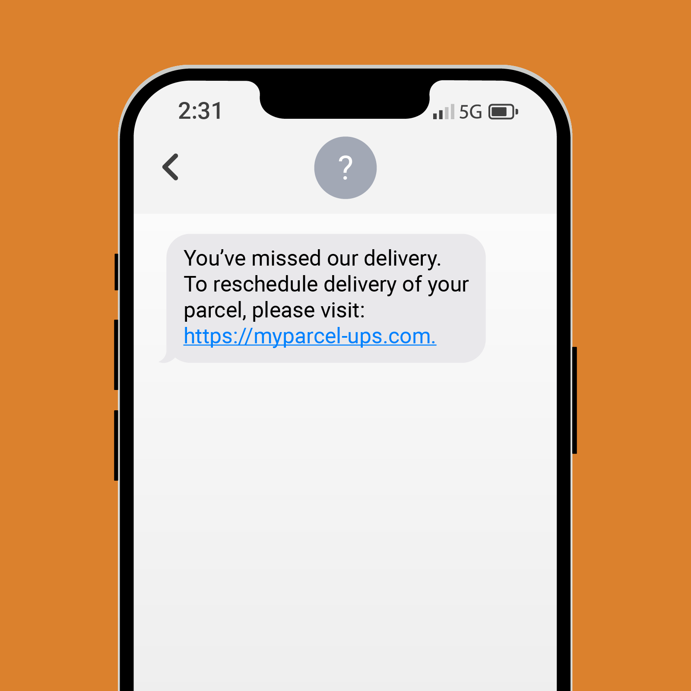
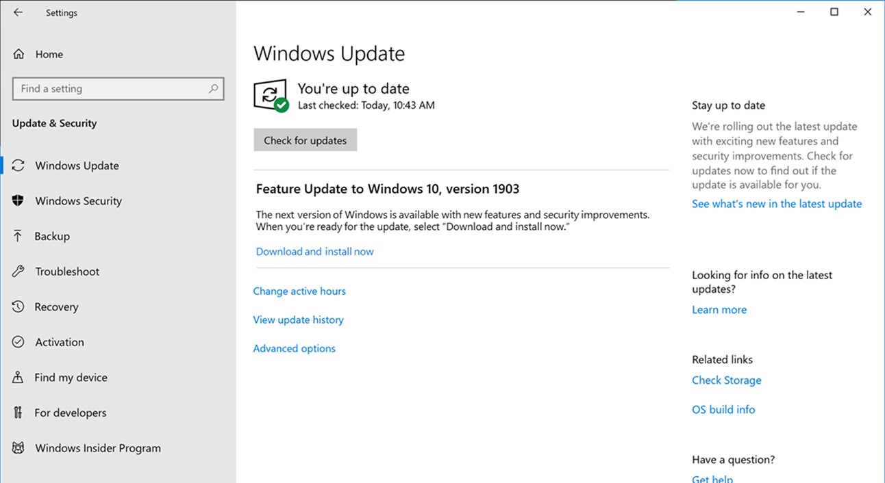
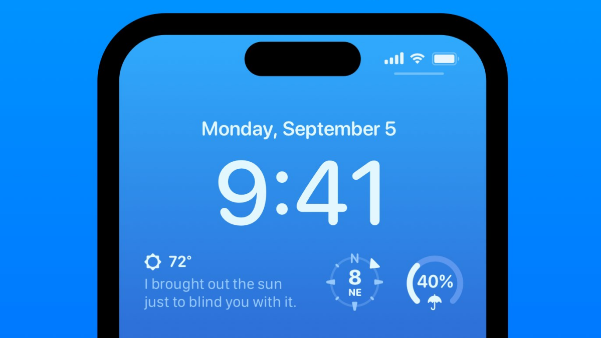

Networking Communication Patterns
Communication Timing
Synchronous
Synchronous communication happens in real-time; both parties communicate with minimal delay.
- The connection is alive for the duration of the conversation.
- Both parties are "waiting" for the other to respond; they do not do other work while waiting.
- Examples: phone calls, video conferencing, live chat
Asynchronous

Asynchronous communication does not require both parties to be available at the same time.
- The connection is not alive for the duration of the conversation.
- Messages can be stored and retrieved later.
- Examples: email, SMS (text messages)
Communication Models
Client-Server

Recall from The Internet: in the client-server model, one device (the client) requests resources or services from another (the server).
- Many clients may connect to one server
- Clients initiate requests; servers respond
- Centralized control (server manages resources)
- May be sync or async
- Examples: web browsing, email, file downloads
Peer-to-Peer (P2P)
In the peer-to-peer model, each device (peer) can act as both a client and a server, sharing resources directly.
- No central server
- Peers connect directly to each other
- May be sync or async
- Examples: file sharing (BitTorrent), cryptocurrency (Bitcoin), AirDrop, LAN multiplayer games
Data Exchange Patterns
Assuming the server has some data that the client needs, there are four main patterns for how the client can get that data:
| Pattern | Who Initiates? | Connection | Use Cases |
|---|---|---|---|
| Pull | Client | On-demand | Web browsing, API requests |
| Polling | Client | Repeated | Email checking, software updates |
| Push | Server | Persistent/On-demand | Push notifications, live updates |
| Persistent Connection | Both | Persistent | Chat, streaming, online gaming |
Pull

With pull, the client requests data from the server whenever it needs information.
- The client initiates each data request.
- The server responds only when requested.
- Suitable for on-demand data access.
- Examples: loading a webpage, API requests, downloading files
Polling

With polling, the client repeatedly requests data from the server at regular intervals to check if anything new is available.
- An automated, repeated form of pull.
- The client sends requests on a schedule (e.g., every few seconds).
- The server responds with new data if available.
- Can be inefficient - most requests may come back with nothing new.
- Examples: email clients checking for new mail, apps checking for software updates, phone lockscreen widgets
Push

With push, the server sends data to the client as soon as it becomes available, without the client needing to request it each time.
- The server initiates data transfer; the client passively receives updates.
- Avoids the wasted requests of polling.
- Good for broadcast (one to many) and event-driven communication.
- Examples: mobile push notifications, live sports scores, weather alerts
Persistent Connection
A persistent connection remains open for the duration of the communication, allowing either side to send data at any time.
- The connection stays alive for the entire session.
- Supports multiple messages in both directions.
- Enables real-time or near-real-time communication.
- Often what makes push possible - the server needs an open line to push through.
- Examples: real-time chat, streaming media, online gaming, WebSockets